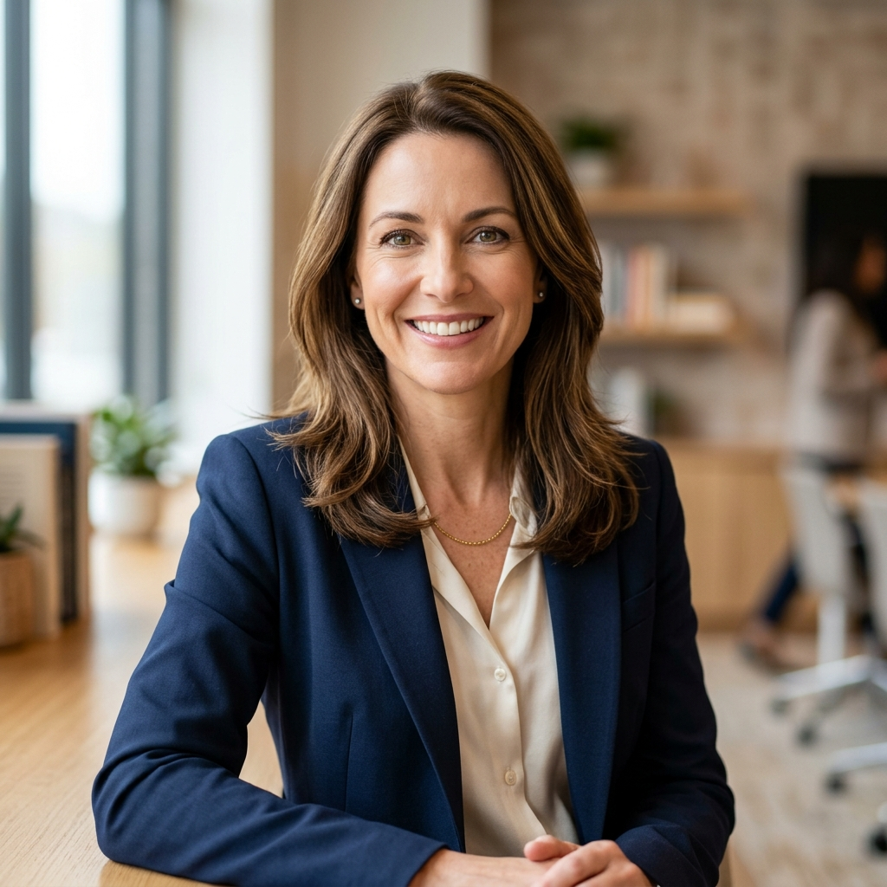

Dubai'de En İyi 10 Okul (2026) — KHDA Outstanding Listesi ve Koçtan Notlar
Her aile Dubai'ye taşınmadan önce aynı soruyu sorar: "Dubai'nin en iyi okulu hangisi?" Bu soruya tek bir doğru yanıt yoktur — ama nereden başlayacağınızı gösteren güvenilir bir pusula vardır: KHDA resmi sitesindeki yıllık okul denetim değerlendirmeleri.
2023–24 akademik yılında Dubai'deki 209 özel okul denetlendi. Yalnızca 23 okul "Outstanding" — yani üstün başarı — derecesi aldı. Bu okulları tek tek inceledim, ziyaret ettim ve ailelerden geri bildirim topladım. Aşağıda hem KHDA verilerini hem de sahadaki gözlemlerimi bulacaksınız.

Dubai'ye taşındığımda ilk yaptığım şey "en iyi okul listesi" aramak oldu. Facebook grupları, expat blogları, WhatsApp sohbetleri... Hepsinde farklı bir isim çıkıyordu. Sonradan anladım ki herkes kendi çocuğuna göre doğru olanı "en iyi" diye tanımlıyordu. O günden bu yana ailelerle çalışırken şunu öğrettim: önce çocuğunuzu tanıyın, sonra okulu bulun.
Dubai'deki En İyi Okullar: KHDA Outstanding Listesi 2026
Dubai'deki en iyi okullar KHDA'nın bağımsız denetimiyle belirlenir. 2023–24'te 200'den fazla okul arasından yalnızca 23 okul "Outstanding" derecesi aldı. Bu okullar: JESS, Repton, DIA Emirates Hills, Nord Anglia, GEMS Wellington, Kings School Dubai, Safa Community School ve Dubai British School. Detaylı değerlendirme aşağıda.
KHDA Derecelendirmesi Nedir, Neden Önemlidir?
KHDA (Knowledge and Human Development Authority), Dubai'deki tüm özel okulları her yıl bağımsız olarak denetler. Denetim yalnızca akademik başarıya bakmaz; öğrenci refahı, kapsayıcı eğitim, okul liderliği ve velilerle iletişim de değerlendirilir. Bu nedenle bir okulun KHDA notu, o okulun bütünsel kalitesini en iyi yansıtan ölçüttür.
Derecelendirme skalası: Outstanding → Very Good → Good → Acceptable → Weak.
Outstanding Dereceli Okullar: Türk Aileler İçin Değerlendirme
23 outstanding okulun tamamı aşağıda. Türk ailelerin en sık tercih ettiği ve sorduğu okuller hakkında ek notlarımı da ekledim.
Jumeirah English Speaking School (JESS) — UK Müfredatı
Dubai'de en sık duyulan isimlerden biri. Hem Umm Suqeim hem Arabian Ranches lokasyonları Outstanding dereceli. EYFS'den Year 13'e güçlü bir devamlılık sunuyor. Türk aileler arasında en çok tercih edilen okullardan. Uyarı: talep çok yüksek, bekleme listesi uzayabiliyor — erkenden başvurun.
Dubai International Academy (DIA) Emirates Hills — IB Müfredatı
Dubai'nin en prestijli tam IB okuludur; PYP, MYP ve Diploma programlarının üçünü de sunar. Okul sıralamaları etkileyici. Yıllık ücret 80.000 AED+ seviyesinde; bu, Dubai ortalamasının oldukça üzerinde. Okul hedefi net olan ve global okul kapısı arayan aileler için birinci sıra tercih.
Aileler sık sorar: "IB mi, British mi?" Çocuğunuz 8 yaşında veya daha küçükse müfredat kararı şu an çok kritik değil — uyum ve mutluluk her şeyden önce gelir. Ama 10 yaşın üzerindeyse ve okul planı netleştiyse bu soru çok önemli hale gelir. IB en geniş global okul kapısını açar; British sistem özellikle İngiltere ve Commonwealth okulleri için güçlüdür.
IB mi, British mi — hangisi çocuğunuz için doğru? Birlikte değerlendirelim
KHDA listesi başlangıç noktası — doğru eşleşme için ücretsiz görüşme planlayın.
Ücretsiz Görüşme PlanlaRepton School Dubai — UK Müfredatı
İngiliz özel okul geleneğini Dubai'ye taşıyan köklü bir kurum. Akademik kalite ve öğrenci refahı dengesiyle tanınır. Hem primary hem de secondary için güvenli bir seçenek. Sınıf büyüklükleri görece küçük, birebir ilgi yüksek.
Nord Anglia International School — UK / IB Müfredatı
Küresel bir eğitim zincirinin Dubai ayağı. Müzik, sanat ve spor programları güçlü — sadece akademik değil, bütünsel gelişimi önemseyen aileler için ideal. MIT ve Juilliard gibi prestijli kurumlarla işbirliği yapıyor.
GEMS Wellington International School — UK Müfredatı
GEMS zincirinin en prestijli okuludur. Geniş kampüs, zengin ekstra müfredat ve yüksek IGCSE / A-Level sonuçları. Expat ailelerin uzun süredir güvendiği bir kurum. Ücretler yüksek ama sunduğu imkânlar kapsamlı.
Dubai College — UK Müfredatı
Yalnızca Year 7–13 (secondary) için. Rekabetçi kabul süreci ve Dubai'nin en yüksek A-Level sonuçları. Akademik olarak üst düzey, çocuğu motive ve akademiye yatkın olan aileler için güçlü bir seçenek.
Kings School Dubai & Kings School Al Barsha — UK Müfredatı
Her iki kampüs de Outstanding dereceli — bu Dubai'de iki kampüslü tek okul zinciri. EYFS'ten secondary'ye kesintisiz devam. "Aile sıcaklığı" olan kampüs kültürüyle öne çıkıyor; bunu birçok Türk aileden bizzat duydum.
Safa Community School — UK Müfredatı
Büyüklüğüyle değil kalitesiyle öne çıkan bir okul. Akademik performans ve öğrenci mutluluğu dengesiyle ayrışıyor. Daha samimi ve topluluk odaklı bir eğitim ortamı arayan aileler için iyi bir tercih.
Horizons English School — UK Müfredatı
Jumeirah bölgesinde köklü bir okul. Outstanding derecesini birden fazla denetimde koruma başarısı gösterdi. Velilerle güçlü iletişim ile tanınıyor.
Dubai English Speaking School (DESS) & Dubai English Speaking College (DESC) — UK Müfredatı
DESS primary, DESC secondary için. İkisi birlikte kesintisiz bir UK eğitim yolu sunuyor. Makul ücret aralığı ve yüksek kalitesiyle Dubai'nin "gizli mücevherleri" arasında sayılır.
Dubai British School Emirates Hills & Jumeirah Park — UK Müfredatı
Her iki kampüs de Outstanding dereceli. Emirates Hills lokasyonu yerleşik bir expat topluluğuna hizmet ediyor; Jumeirah Park daha yeni kampüs, modern altyapıya sahip.
Victory Heights Primary School — UK Müfredatı
Adından da anlaşılacağı üzere sadece primary (ilkokul) eğitimi sunuyor. Sports City bölgesindeki geniş spor tesisleriyle öne çıkıyor. Küçük çocuklar için aktif öğrenme ortamı.
JESS Arabian Ranches — UK Müfredatı
JESS'in ikinci kampüsü. Arabian Ranches ve çevre villalarda yaşayan aileler için coğrafi avantajlı. Ana kampüsle aynı kalite standartlarını koruyor.
GEMS Jumeira Primary School — UK Müfredatı
GEMS zincirinin primary özelinde en güçlü okuludur. Küçük çocuklar için sıcak ve yapılandırılmış bir ortam sunuyor. Secondary geçiş planlaması ayrıca yapılmalı.
GEMS Dubai American Academy (DAA) — ABD Müfredatı
Dubai'deki Amerika sisteminin en prestijlisi. AP dersleri ve SAT hazırlığı güçlü. ABD okulsine gidecek çocuklar için ideal; ancak Türkiye ya da İngiltere hedefi olan aileler için British veya IB sistemi daha uygun.
Bu iki okul arasındaki bağlantıyı bizzat yaşadım. Dubai'ye taşındığımda bekleme listesi belirsizliği nedeniyle çocuğumu Nord Anglia International School'a kaydettirdim — okulun kalitesine güveniyordum ve o sırada elimdeki en kesin seçenekti. Ama bir süre sonra, üstün akademik başarı değerlendirmesi sonucunda GEMS Dubai American Academy (DAA)'dan beklenmedik bir kabul aldık. Bu sürprizi değerlendirdik ve DAA'ya geçtik. Tek değişen okul değildi — ev lokasyonumuzu da buna göre yeniden düzenledik. Bu deneyim bana çok önemli bir şey öğretti: Dubai'de okul sürecini yalnızca tek bir seçeneğe bağlamayın. Birden fazla okula başvurun, bekleme listelerine erken girin ve planlarınızı esnek tutun. Hayat, en iyi seçeneği bazen siz planlamadan önünüze koyar.
Lycée Français Georges Pompidou & AFLEC — Fransız Müfredatı
Fransız sistemini Dubai'de sürdürmek isteyen aileler için iki seçenek. Türk aileler için genellikle uygun değil, dil bariyeri nedeniyle.
GEMS Modern Academy — Hint Müfredatı
Hint müfredatında (CBSE) Outstanding dereceli tek okul. Hint expat topluluğuna hitap ediyor. Türk aileler için müfredat uyumu sınırlı.
Dubai'de En İyi IB Okulları
IB (International Baccalaureate) müfredatı Dubai'deki global üniversite başvurularında en geniş tanınırlığa sahip. KHDA Outstanding dereceli IB okulları:
KHDA Outstanding IB Okulları
IB müfredatının yoğun proje ve araştırma yapısı her öğrenci profiline uygun olmayabilir. Hangi müfredatın çocuğunuza gerçekten uyduğunu anlamak için IB, A-Level ve Amerikan müfredatı karşılaştırma rehberimizi okuyun.
Dubai'de En İyi British Okullar
British müfredatı (EYFS → GCSE → A-Level) Dubai'deki Outstanding okulların büyük çoğunluğunu oluşturuyor. GCSE ve A-Level sınavları İngiltere, Avustralya ve Commonwealth üniversiteleri için güçlü bir zemin.
KHDA Outstanding British Okulları
Dubai'de En İyi Amerikan Okulu
KHDA Outstanding dereceli tek Amerikan müfredatı okulu Dubai'de GEMS Dubai American Academy (DAA). AP (Advanced Placement) dersleri ve SAT hazırlığıyla ABD ve Kanada üniversitelerine güçlü bir zemin sağlıyor.
Dubai'de En İyi Ortaokul ve Lise (Secondary School)
Secondary school (Year 7–13) geçişinde okul seçimi, primary'den daha kritiktir: müfredat daha ağırlaşır, üniversite yolu şekillenmeye başlar. KHDA Outstanding dereceli seçenekler arasında öne çıkanlar:
- Dubai College — Yalnızca Year 7–13. Dubai'nin en rekabetçi A-Level sonuçları. Akademik olarak üst düzey aileler için.
- Repton School Dubai — Primary ve secondary birlikte Outstanding. Küçük sınıflar, yüksek bireysel ilgi.
- GEMS Wellington Academy Al Khail — EYFS'ten Year 13'e kesintisiz. Hem primary hem secondary kampüsü Outstanding.
- JESS (Jumeirah English Speaking School) — Köklü, güvenilir. Secondary için Umm Suqeim kampüsü.
- Nord Anglia International School Dubai — IB Diploma ve IGCSE. Küçük, odaklı secondary yapısı.
Bölgeye Göre Okul Haritası
Dubai'de okulun fiziksel konumu çok önemlidir. Uzun trafik yolculukları hem çocukları hem de ebeveynleri yorar. Yaşadığınız bölgeye göre outstanding okullar:
Bölgeye Göre Outstanding Okul Önerileri
Ücret Gerçekliği
Outstanding dereceli okullar için yıllık ücretler genellikle 55.000–100.000 AED arasında. Bu rakamın dışında kayıt ücreti (500–1.500 AED, iade edilmez), üniforma ve kitaplar (3.000–8.000 AED) ve ekstra aktiviteler ekleniyor.
Ücretlerin bir kısmını burs veya okul yardımıyla karşılamak istiyorsanız, GEMS, Nord Anglia ve Repton başta olmak üzere pek çok Outstanding okul akademik, spor ve sanat bursları sunuyor. Detaylar için Dubai'de Okul Bursu İmkânları rehberimize bakın.
Doğru Okulu Bulmak İçin Kontrol Listesi
Okul seçiminden önce kendinize sorun
Yıllarca ailelerle çalıştım ve şunu gördüm: KHDA'nın Outstanding dediği okula giden her çocuk mutlu olmuyor. Ama çocuğun karakterine, öğrenme stiline ve ailenin değerlerine göre seçilmiş bir okula giden çocuklar — hangi KHDA derecesinde olursa olsun — çok daha iyi sonuçlar alıyor. Liste yalnızca bir başlangıç noktası. Gerisi sizin ve çocuğunuzun hikâyesi.
Türk Ailelerin En Çok Sorduğu Sorular
KHDA nedir ve okul derecelendirmesi nasıl çalışır?
KHDA (Knowledge and Human Development Authority), Dubai'deki özel okul ve kreşleri denetleyen resmi kurumdur. Okulları Outstanding, Very Good, Good, Acceptable ve Weak olmak üzere beş kategoride değerlendirir. Denetim yalnızca akademik başarıyı değil; öğrenci refahı, okul liderliği ve kapsayıcı eğitimi de kapsar. Raporlar khda.ae adresinde kamuya açıktır.
Dubai'de kaç tane KHDA Outstanding okul var?
2023-24 KHDA denetim döneminde Dubai'deki 209 özel okulun yalnızca 23'ü "Outstanding" (Üstün) derecesini almıştır. Bu okullar arasında IB, British ve Amerikan müfredatı uygulayan kurumlar bulunmaktadır.
KHDA derecelendirmesi okul seçiminde tek belirleyici olmalı mı?
KHDA derecesi önemli bir başlangıç göstergesidir ancak tek belirleyici olmamalıdır. Çocuğun İngilizce seviyesi, ailenin bütçesi, ulaşım mesafesi, müfredat tercihi ve okulun kültürel atmosferi de en az derecelendirme kadar önem taşır.
Dubai'deki en iyi okullar için bekleme listesi ne kadar sürer?
KHDA Outstanding dereceli okulların büyük çoğunluğunda 1–3 yıl bekleme listesi vardır. GEMS Wellington, Repton, JESS gibi popüler okullara 12–18 ay öncesinden başvurmanız önerilir. Birden fazla okula eş zamanlı başvurmak, kabulü hızlandırmanın en güvenli yoludur.
Dubai'de hangi müfredat üniversite için en avantajlı?
IB Diploma Programme global üniversite başvurularında en geniş tanınırlığa sahip programdır. A-Level özellikle İngiltere ve Commonwealth üniversiteleri için güçlüdür; AP ise ABD üniversitelerini hedefleyenler için tercih edilir.
Dubai'de hangi okullar iyi?
Dubai'nin en iyi okulları KHDA'nın "Outstanding" derecelendirdiği 23 kurumdur. Öne çıkanlar: JESS, Repton, Dubai International Academy (DIA), Nord Anglia, GEMS Wellington, Kings School Dubai ve Safa Community School. Bu okullar akademik kalite, öğrenci refahı ve liderlik açısından Dubai'nin zirvesinde yer almaktadır.
Dubai'deki en iyi okulların ücretleri ne kadar?
Outstanding dereceli okullar için yıllık ücretler 55.000–100.000 AED arasında değişmektedir. Daha uygun fiyatlı Outstanding alternatifler arasında DESS, DESC ve Safa Community School sayılabilir. Pek çok şirket expat çalışanlarına 80.000–120.000 AED'e kadar eğitim yardımı sağlamaktadır.
Çocuğunuz için doğru okulu birlikte bulalım
Özlem Çimen ile birebir görüşmede çocuğunuzun profilini, müfredat seçeneklerini ve başvuru takvimini birlikte ele alabilirsiniz.
Ücretsiz Görüşme Planla Dubai Danışmanlık Sayfamız →